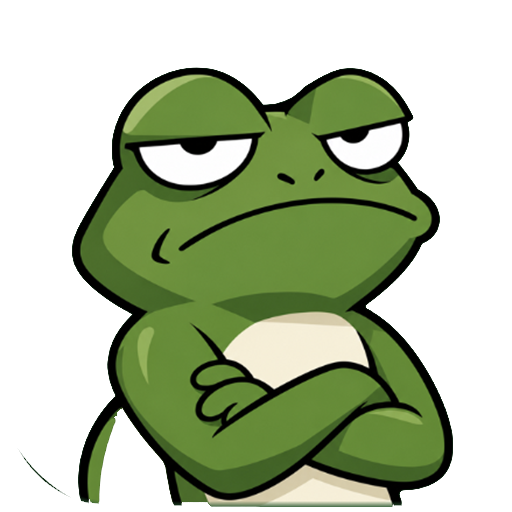

Kip for Windows
Walks across your screen and bullies you off distracting sites and apps.
You
Distracting sites & apps
Alarm
Kip checks which window is in front once a second, on this computer only. Websites are recognised by the browser tab's title. Nothing is uploaded. Pause or quit any time from the frog in the taskbar tray.